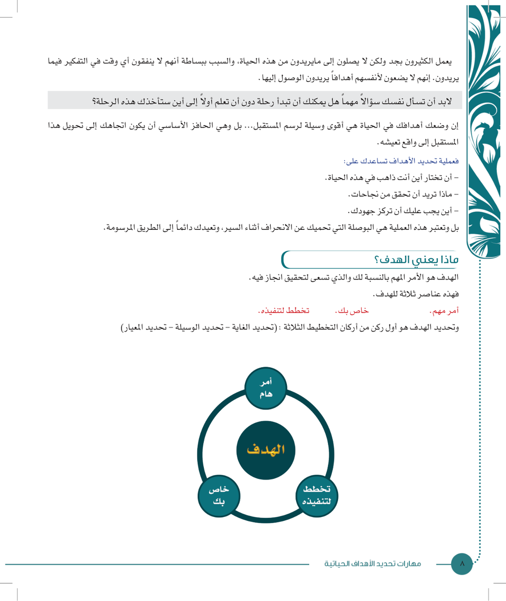
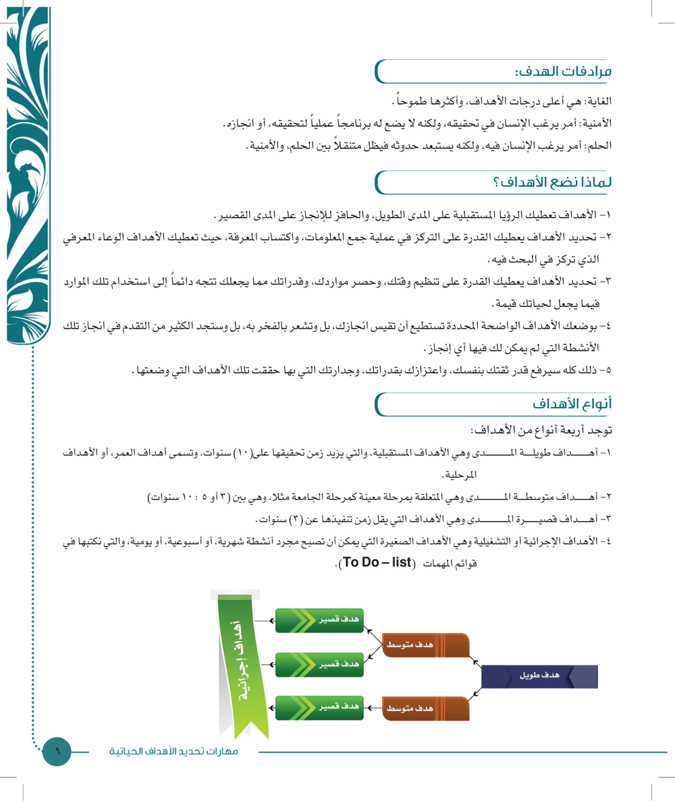
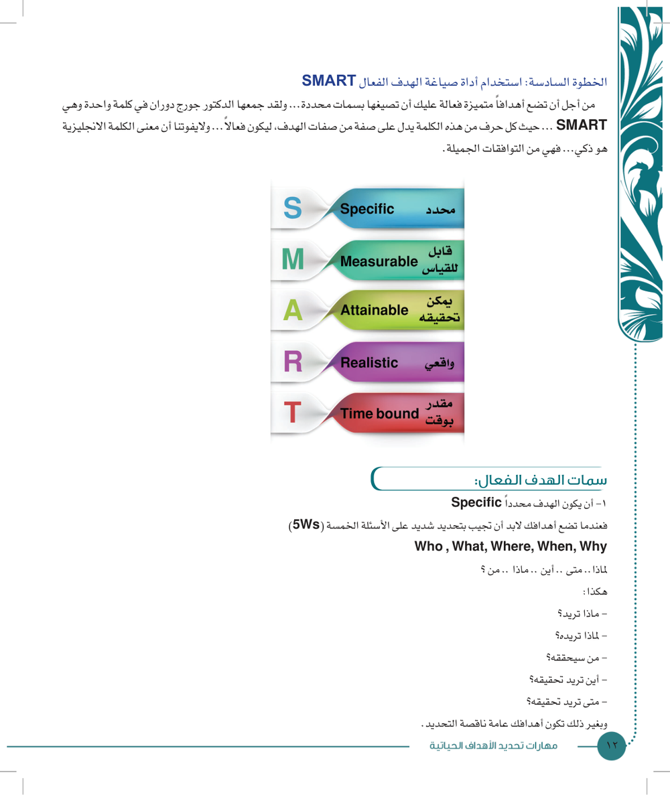
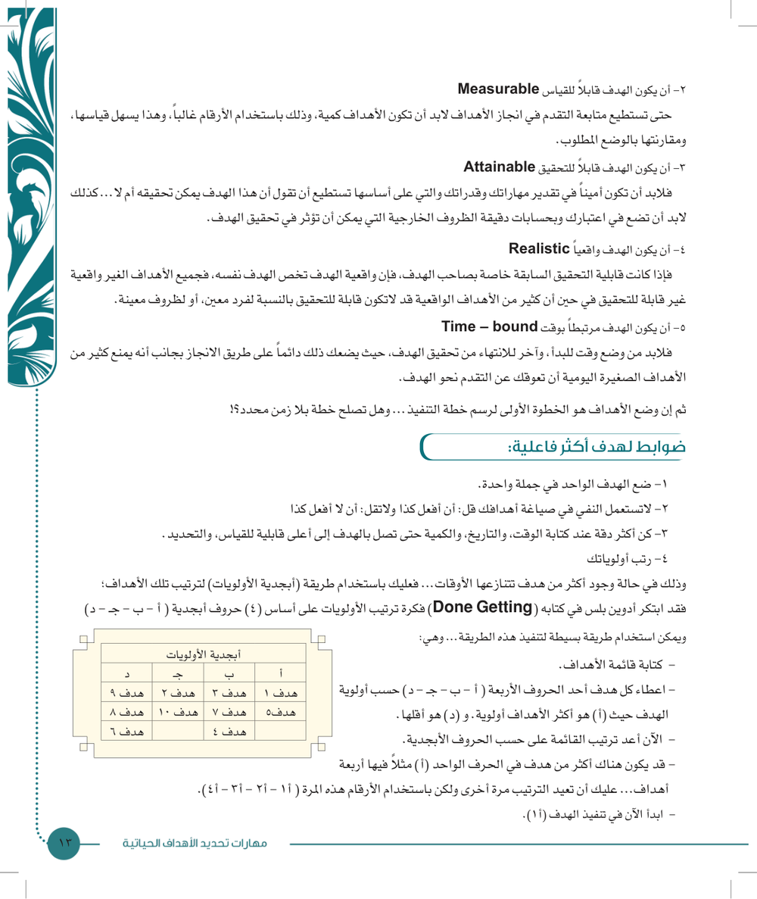
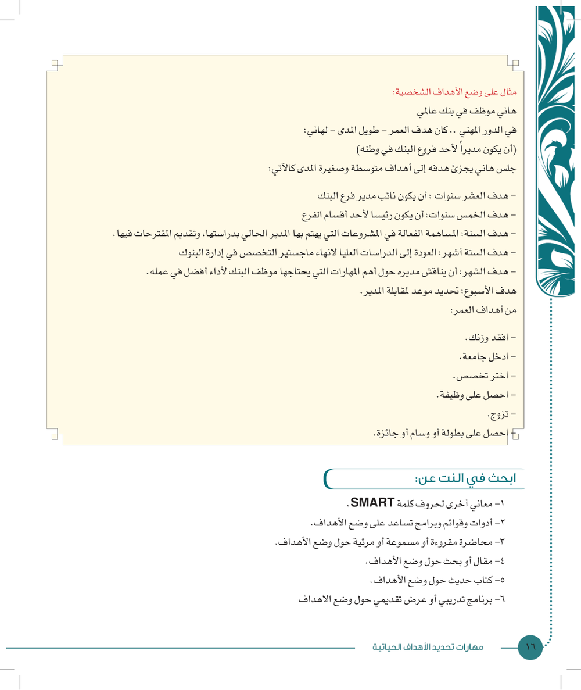

النقاط الأساسية من الكتاب (صفحات 6–17). الملخص الكامل على الدرايف.
هذي الوحدة كلها عن الهدف: وش هو، وش الفرق بينه وبين الأمنية والحلم والغاية، وأنواعه حسب الزمن. بعدين تمشي معك خطوة خطوة لين تكتب أهدافك بطريقة SMART، وترتب أولوياتك بالأبجدية، وتحوّلها لأنشطة. ركّز على الأرقام (3، 5، 10) والتعريفات، لأنها أكثر شي يجي بالاختبار.





22 سؤال على هذي الوحدة، و23 سؤال منها من الاختبار التجريبي حق الدكتور. الجواب يطلع لك على طول، وتقدّمك ينحفظ.